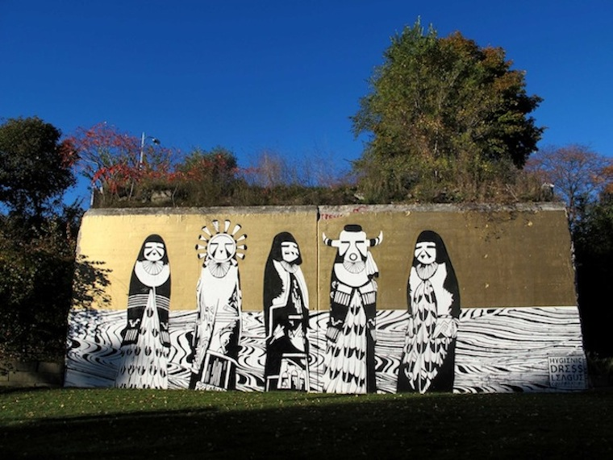
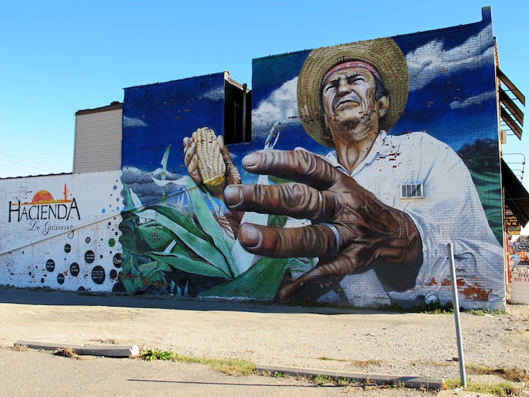
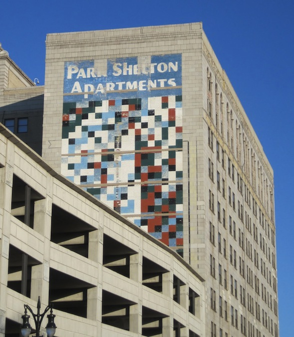
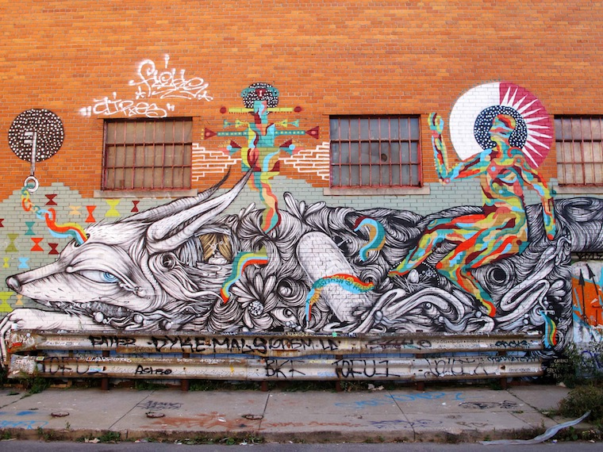

Detroit in 2014 is rich with murals . The act of mural making has become increasingly popular here as a strategy to enliven urban spaces, whether neglected, stable, or in the process of revitalization.
It is practiced today by local, national, and international artists working in a kaleidoscopic variety of styles.
The pieces are commissioned by businesses, arts and development organizations, and community groups, sometimes with community members themselves taking an active role in their creation.
The murals function as both decoration and declaration of life. As signs that help shape distinct neighborhood identities. As attempts to build and strengthen communities. Detroit has truly become a "city of art," and the art, like the city, is sprawling, messy, and variable.
The genesis of this proliferation can be traced, in part, to the early 1970s, when the first organized efforts to paint large-scale murals on Detroit's buildings were undertaken.
First came Art for Detroit, funded by the nonprofit development organization Detroit Renaissance in 1971 and resulting in the creation of three works: Alan Loving's lost Message to Demar and Lauri, Aris Koutroulis's lost Poetic Electricity on the Broadway Capital Building, and John Egner's still extant but partially obscured and compromised mural Untitled on the north wall of the Park Shelton.
In a letter dated March 3, 1971, Thomas Reid, president of Detroit Renaissance, explains the purpose and provenance of the program:
In line with our twin goals of promoting economic development in Detroit and revitalizing a widespread civic spirit, Detroit Renaissance has become involved with a very interesting and unusual project….Early last December, Lee Hills, publisher of the Detroit Free Press and president of the Detroit Arts Commission, suggested that paintings on the bare, drab, outside walls of some downtown buildings would give a visible lift to our city….
Later that year, inspired by the generally positive reaction to Art for Detroit's efforts, the Arts Committee of New Detroit, Inc. begins work on Living With Art, its own public art effort, adding public sculptural works to the mix. Arts Committee members drive around the city looking for potential mural sites and write letters asking property owners to allow their buildings to become adorned at no cost.
Reaction is not always favorable. On October 15, 1971, Michigan Consolidated Gas Company president Ralph T. McElvenny writes to Richard Richards, New Detroit's division director of Housing, Recreation, Youth and Arts:
I do have substantial reservations about the paintings of murals on the sides of our downtown buildings. To me, this represents little more than hanging up a great billboard and I believe that the thinking of the public generally has very definitely progressed to the point where billboards are regarded more as an eyesore than anything else, particularly on our highways, and that they have little esthetic quality of appeal in our cities.
I know it will be said that the murals on our buildings will be carefully selected and done by reputable artists, etc., but I think it takes little imagination to visualize what these murals may look like after a few of our typical winters have passed over them. To me, [this] proposal could well result in inflicting upon Detroit, an ancient city with a proud heritage, some of the junky aspects of Hollywood, Los Angeles, and Coney Island.
…Painting the outside walls of our downtown buildings…will detract from, rather than enhance, the appearance and cultural standing of our city.6
But doubts like McElvenny's are overshadowed by enthusiasm. Shortly after their creation, both Art for Detroit's and New Detroit's murals ("the first murals on the outside walls of Detroit's buildings") earn the approval of the Detroit Free Press art critic (and, later, founding director of MOCAD) Marsha Miro, who writes in 1974:
Those who have judged and will continue to judge the success of these murals ("They're cool," "They start me dreaming," "They cheer me up,") are the nearby parking lot attendants, bus drivers, business people, and residents, as well as the artists and art critics, for the murals have not only provided a marvelous aesthetic face-lift for the hard bricks and mortar they cover, but, more important, they have made art, and good art at that, part of the everyday scene.8
The early '70s murals, funded by development organizations with big dreams and deep pockets, created to engender civic pride and promote economic revitalization, are almost all gone or badly deteriorated.
Often placed up high, designed by gifted fine artists in precise, larger-than-life experiments that reflect both personal style and the aesthetic concerns of the day, they must have seemed, for a time, eternal. Monumental. But the economic situation in Detroit only worsened, and where they still exist, as Ralph McElvenny predicted, the murals decay. (New Detroit's sculptural commissions have fared much better.)
More recent murals, created in a time of prolonged economic depression, when the distinction between fine and street art has eroded, do not seem to reach as high as works like Color Cubes and Message for Demar and Lauri did. They are often painted, in fact, at street level, where they're susceptible to vandalism (or modification by others artists.)
But perhaps they reflect, as Patricia C. Phillips puts it, "a more passionate commitment to the temporary" that is better suited to the inconstant urban environment.10 They do not seem to suffer from the misconception, in other words, that they are meant to last.
See COLOR CUBES , IMPERMANENCE , LIVING WITH ART , CHARLES MCGEE , MESSAGE TO DEMAR AND LAURI , PUBLIC ART , and URBAN RENEWAL .